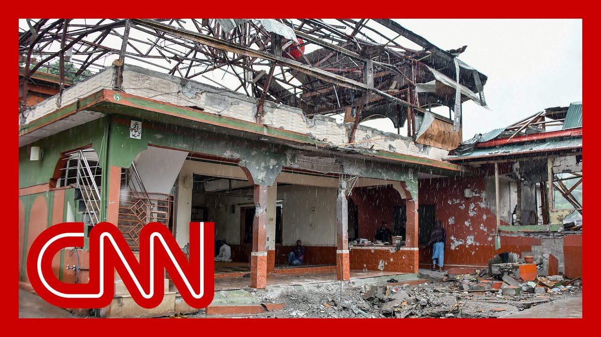

来B站一起耍【Global每日英语简报】
【印度连夜对巴基斯坦发动无人机袭击，巴基斯坦政府消息人士称】
Summary: India launched another drone attack on Pakistan overnight, Pakistan government source says.
摘要： 印度连夜对巴基斯坦发动无人机袭击，巴基斯坦政府消息人士称

⏱️ Estimated Reading Time: 11 min
New developments in the conflict between India and Pakistan.
印巴冲突出现新进展
A Pakistani source says India launched another drone attack overnight.
巴基斯坦消息人士称印度连夜发动无人机袭击
India has accused Pakistan of attacking it with drones.
印度指责巴基斯坦使用无人机袭击其领土
Major damage this morning near their disputed border in Kashmir.
今晨在克什米尔争议边境附近发生重大破坏
Listen to how Pakistan's ambassador to the U.S. described the recent violence between the two nations.
听听巴基斯坦驻美大使如何描述两国间近期暴力事件
Started by India, escalated by India.
由印度挑起，由印度升级
It's the third night Pakistan has exercised its right to self defense.
这是巴基斯坦连续第三晚行使自卫权
But basically, this is not the kind of, simplified version of the security situation in the region that I think the world wants to see.
但简而言之，这不是国际社会希望看到的地区安全局势
We're going to go live now to New Delhi, India, and bring in CNN's Matthew Chance.
我们现在将连线印度新德里的CNN记者马修·钱斯
Matthew, can you give us the details of what's happening this morning?
马修，能否详细介绍今晨情况？
Yeah, absolutely, Audie.
好的，奥黛丽
Well, you join me in a very hot market in the middle of New Delhi, the Indian capital, where I've been speaking to people about what they think of this increasingly dangerous standoff between India and neighboring Pakistan.
此刻我正身处新德里市中心一个热闹市场，这里的人们对日益危险的印巴对峙局势看法不一
And, you know, the general sense you get here is that people are backing the Indian government.
总体而言，当地民众支持印度政府
They think that the Indian attacks on Pakistan were entirely justified.
他们认为印度对巴袭击完全正当
And that's something that is reflected by Indian officials that have been speaking to as well, because they're saying that they carried out the airstrikes on Pakistan because of the terror attack.
印度官员也持相同观点，称空袭是对恐怖袭击的回应
That they blame Pakistan for.
他们指责巴基斯坦策划了恐袭
That took place in the Indian administered area of Kashmir last month.
该袭击上月发生在印控克什米尔地区
Now there's security measures in place already.
目前安全措施已就位
The Indians have, you know, canceled schools, suspended schools in Jammu and Kashmir, but they've suspended schools elsewhere in Punjab province, which is close to the Pakistan.
印度已关闭查谟-克什米尔地区学校，邻近巴基斯坦的旁遮普省学校也停课
They've also canceled all the leave that civil servants are meant to have in this country.
同时取消全国公务员休假
In preparation, they say, for a possible emergency response.
官方称这是为可能的紧急情况做准备
So they are expecting, they say, attacks by Pakistan in the future, in the coming days potentially.
预计巴基斯坦未来几天可能发动报复
And I think it's fair to say the country's on a state of a state of alert.
可以说全国已进入警戒状态
So very dangerous situation, particularly when you consider, of course, Audie, that both India and Pakistan have nuclear weapons.
局势极其危险——尤其考虑到两国都拥有核武器
We're a long way from a nuclear confrontation.
目前远未到核对抗程度
But in an issue that is as tense and as emotional as this, it is a danger that really everybody is having at the back of their minds.
但面对如此紧张激烈的冲突，核威胁确实潜伏在众人心底
CNN's chief global affairs correspondent Matthew Chance, speaking to us from India.
CNN首席国际事务记者马修·钱斯从印度发回报道
Let's stay with the story now and bring in CNN's Nick Robertson column covering all of this live this hour from Rawalpindi in northern Pakistan.
继续关注本事件，连线CNN驻巴基斯坦北部拉瓦尔品第的尼克·罗伯逊
Nick, give us a sense of what the latest is on the ground this morning.
尼克，请介绍当地最新情况
Yeah. When you looking at Kashmir across that line of control, there has been intense shelling.
是的，控制线克什米尔一侧正遭遇猛烈炮击
People fleeing the border area right now.
民众正逃离边境地区
That's what we're understanding.
这是我们掌握的情况
Overnight, Pakistani officials told us that India sent more drones into Pakistan.
巴官员称印度昨夜再次派遣无人机入境
They sent 29. According Pakistani officials, India sent 29 drones into Pakistan yesterday.
据称印度昨日共派出29架无人机
One of them came down here and I'm just give us a show and tell here.
其中一架坠毁在此处
This is a cafe area.
这里是餐饮区
You see some of the metal work ripped down here.
可见金属构件被炸毁
Pan up. You can see there where the drone impacted on the building up there above us.
抬头能看到无人机撞击建筑物的痕迹
And if you come down here, you get a sense of look, the shrapnel literally splashed all across the wall here.
墙面布满弹片冲击痕
It came down. The shrapnel marks all over the ground here.
地面也遍布弹痕
A piece of shrapnel lying on the ground.
地上还有未清理的弹片
Now, it was about 1030 in the morning when that happened yesterday.
袭击发生在昨日早上10:30
This area here is known as Food Street.
该区域名为美食街
Fortunately, at that time, it wasn't too busy.
所幸当时人流不大
But the the window from this, all these restaurants were blown out.
但沿街餐厅窗户全被震碎
They're being tidied up today.
今天正在进行清理
But right behind what you're looking at there is the Royal Pindi Cricket Stadium.
后方就是皇家品第板球场
And there is a major cricketing event going on here.
原定举行重要板球赛事
Well, there was the Pakistan Super League bringing in international players.
巴基斯坦超级联赛邀请了许多国际球员
It's the sort of it's the main cricketing event of the year inside Pakistan.
这是巴国内年度顶级板球赛事
That because the foreign minister said actually it was the stadium that was the target of the drone, the organizers of this cricketing event put it on pause and moving it to the UAE.
因外长称体育场是袭击目标，赛事已暂停并移师阿联酋
That's going to cost several millions of dollars to do.
此举将耗资数百万美元
India, in the meantime, is also, now pausing matches in the Indian Premier League major sporting event there as well.
印度也暂停了板球超级联赛
And it's ironic, if you will, that cricket, the sort of unifying thing for the youth of these two nations, it's getting affected by these attacks.
具有讽刺意味的是，作为两国青年纽带的板球运动正受冲突波及
But this is what people are living in fear of here.
这就是当地民众的生存现状
Yesterday, one man in his mid-twenties was killed.
昨日一名25岁左右男子遇难
Two people were injured.
另有两人受伤
Nick Robinson reporting live for us there in northern Pakistan, as we continue to see the ripple effects of this conflict in as many world leaders around the world watch to see if this continues even further into a wider conflict.
尼克·罗伯逊从巴基斯坦北部发回报道，全球领导人正密切关注冲突会否升级
Nic Robertson, thank you.
感谢尼克·罗伯逊
There's been new cross-border fire between India and Pakistan.
印巴边境再起新交火
It's raising fears the two nuclear armed rivals are on the brink of a wider conflict.
引发对两个核武国家濒临大规模冲突的担忧
New video shows damage in the aftermath of attacks overnight in India.
最新视频显示印度境内夜间遇袭后的破坏情况
The Indian Army says it repelled multiple attacks on Pakistani drones and other munitions along the Line of Control, which is the de facto border in disputed Kashmir.
印度军方称在控制线击退多架巴基斯坦无人机袭击
Pakistan says it destroyed several Indian Army checkpoints along the border in response to what it calls unprovoked firing from the Indian side.
巴基斯坦称摧毁多个印军哨所，作为对"印方无端开火"的回应
Now, in his first public comments on the crisis, India's prime minister called for continued alertness.
印度总理首次公开表态，呼吁保持警惕
I want to bring in journalist Kanika Sood, who's covering all this live from Delhi.
现在连线新德里记者卡妮卡·苏德
Good to see you again. Velika.
很高兴再次见到你
With tensions heating up, where do things stand right now?
当前紧张局势下，最新进展如何？
Well, every morning there is some development through the night that we bring to you, and that's what we're going to do today as well.
每天清晨我们都会带来夜间最新动态
India and Pakistan are trading blame over overnight attacks that have taken place.
印巴相互指责对方发动夜间袭击
In fact, the Indian military has come out with a statement and they have accused Pakistan of sending in munition and missiles from across the border in the northwestern region.
印度军方声明指控巴基斯坦从西北边境发射弹药导弹
And they have said that they targeted military establishments in these areas, a charge that Pakistan has denied repeatedly.
巴方多次否认以军事设施为目标的指控
I want to also now bring up a statement on air from the Indian Defense Ministry.
现在插播印度国防部声明
And I'm going to quote from that statement, the Indian Defense Ministry said, and I quote them here, military stations at Jammu, Bhutan, quote, and other people were targeted by Pakistani origin drones and missiles along the international border in Jammu and Kashmir today.
"查谟等地的军事哨所今日在印控克什米尔边境遭巴基斯坦无人机和导弹袭击"
The threats were swiftly neutralized.
威胁已被迅速消除
Now, CNN has spoken to people living in these areas who witnessed what had happened overnight local time, and they said that the situation around them was full of panic and there was palpable tension.
CNN采访的当地目击者称现场充满恐慌与紧张
I also want to draw your attention to the issues that we're now going to bring up of the damage, the intense damage done to property of residents and to schools along the Line of Control on the Indian side.
请注意控制线印方一侧居民财产与学校遭受的严重破坏
You have villagers who have gone back in to those areas that were hit due to cross border shelling overnight, and you can see the damage done to the property there, CNN against local residents of that area.
返乡村民向CNN展示夜间炮击造成的财产损失
And one young man spoke to CNN saying that he moved out with some family members, while others stayed back, and about 50 to 60 of them were in just one bunker.
一名青年告诉CNN，部分家人撤离时约50-60人挤在同一个防空洞
While that heavy cross-border shelling took place.
当时正遭遇猛烈跨境炮击
Now, let's talk to you about the international community.
现在关注国际社会反应
I want to start with a statement coming in from the US vice president.
首先播报美国副总统声明
He did say that he is worried about the situation in the South Asian region.
他对南亚局势表示担忧
But he also said this we want this thing to de-escalate as quickly as possible.
"希望局势尽快降级"
We can't control these countries, though.
"但我们无法控制这两个国家"
Fundamentally, India has its gripes with Pakistan.
"根本上这是印巴之间的争端"
Pakistan and has responded to India.
"巴基斯坦对印度作出了回应"
What we can do is try to encourage these folks to de-escalate a little bit, but we're not going to get involved in the middle of war.
"我们只能敦促双方克制，但不会介入战争"
That's fundamentally none of our business.
"这本质上不关我们的事"
In other developments from within India, civil servants have been asked not to go on leave.
印度国内方面，公务员被取消休假
Over the next few days, and also there's a high alert that has been issued in most of the airports across the country.
全国多数机场进入高度戒备
Back to you, Kim.
交还给你
I appreciate you bring us the latest on this.
感谢带来最新消息
Live in Delhi. Thank you so much.
新德里现场报道，非常感谢